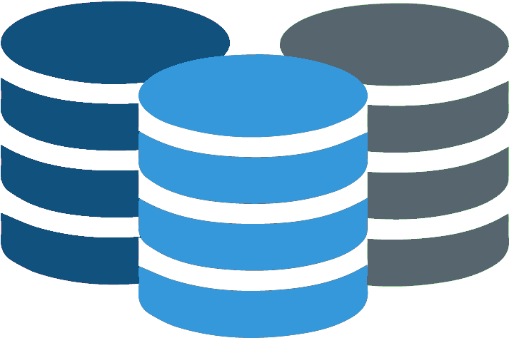

6,669 subjects

398 cohort attributes

A web solution to harmonise different Alzheimer's Disease cohorts into a standard data schema, using ETL processes in a multi-institution environment.
BIcenter is a web ETL tool using Pentaho Kettle as the DI execution engine. This tools offers:
BIcenter-AD is a adpated version containing new components to semi-automatically harmonise large amounts of medical concepts in clinical studis.
It creates new opportunities for the study of rare conditions, where typically isolated cohorts do not provide enough statistical evidence.
The results can augment clinical knowledge by automatically computing new patient information during the migration stage.
BIcenter-AD can migrate and harmonize clinical cohorts from CSV format into the OHDSI OMOP CDM schema. This procedure increases the interoperability of the data by allowing the exportation of several cohorts into a new system reusing the same scripts.
The documentation about the BIcenter features and guidelines for developers is available here.
The methodology appied in BIcenter-AD was validated by the cohort data owners and developed by the following team members: